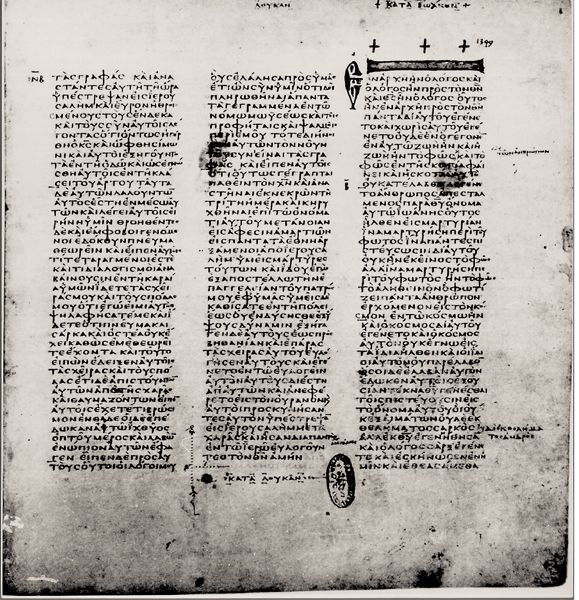
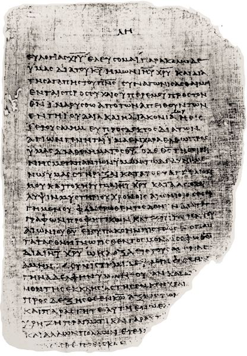

The New Testament (NT) is a collection of twenty-seven separate documents that, together with the Old Testament (OT), has exercised such significant influence in the history of the world that its impact would be difficult to measure and hard to exaggerate. Undoubtedly, the NT remains the focus of studied attention and continues to inspire because of its recognition as Scripture in the Christian church. Together with the books of the OT, these documents are regarded by the various Christian communions around the world as the decisive witness to Jesus Christ and hence as normative for shaping Christian belief and practice. Fundamental to the nature of the Christian Bible is its division into these two parts — “old” and “new,” “first” and “second.” The “oldness” of the OT and the “newness” of the NT derive from the respective relationships of these two collections to the figure of Jesus, who is the unifying center of Scripture for Christians. In relation to Jesus, the OT precedes and anticipates, the NT follows and proclaims. “Testament” — from Latin testamentum, itself a translation of Greek diathēkē — names and interprets these collections of books in relation to the covenanting God — the one “covenant” (“old”) taking its character from Mount Sinai, the other (“new” or “renewed”) inaugurated by Jesus. The most distinctive characteristic of the NT documents is surely their function as Scripture within the Christian church. Can more be said to answer the question, What is the New Testament?
Written by about a dozen different authors, these documents were not originally intended to be part of a collection known as “The New Testament.” During the years in which these narratives and letters were being written, neither “Old Testament” nor “New Testament” was used to refer to a collection of documents. In fact, our earliest evidence for the use of these designations comes from the second century CE. Prior to that time, what we refer to as the “Old Testament” was called by a variety of names, such as “the Scriptures” or “the Law and the Prophets.”
Each of the documents now gathered together under the rubric “New Testament” was originally written to stand on its own. The Gospel writers, sometimes called Evangelists, could scarcely have imagined that their work would be included in a collection of four Gospels ( “the Fourfold Gospel”), let alone in an amalgamation of Pauline epistles and other letters and documents. Paul certainly hoped that at least some of his letters addressed to specific churches would be read in other churches as well (see 2 Cor 1:1–2; Col 4:16), but he could hardly have supposed that so many of his letters would be read by each of his churches, let alone by Christians around the world after two millennia. Even if it serves this purpose admirably, the book of Revelation was not written as a kind of “capstone” for the NT, let alone the climactic work of what would come to be the Bible of the Christian church. Such historical intentions notwithstanding, for centuries the Christian church has cherished and read these twenty-seven books under the heading “New Testament,” with the conviction that they properly fit together under just that designation. The story of how these somewhat disparate materials, each with its own historical and literary integrity, came to be gathered into a collection is properly considered under the history of the canon — a story to which we return in chapter 25. For now it is enough to ask what sort of collection we have in the NT. What is the NT?

Codex Vaticanus (fourth century), open to the end of Luke’s Gospel and the beginning of John’s
The question is important because the answer to it will go a long way toward shaping how we read and study the NT. Moreover, it can be answered in a number of different ways depending on one’s point of view, convictions about the NT, and general awareness of its character and historical origins. Viewed in historical perspective, the NT can be considered as a series of documents of the early Christian movement that emerged in the first century CE in the area surrounding the Mediterranean. The NT can also be classified according to the variety of forms, or genres, contained within it. And it can be approached with special attention to its concern for faith and belief. A look at each of these angles of approaching the NT will not only illumine for us its character, but also suggest appropriate ways of reading that do it justice. Just as one has different expectations of, and hence different approaches to, various specimens of modern writing, such as a historical account, work of fiction, newspaper editorial, personal letter, or business memo, so one will bring different expectations in reading to the documents of NT depending on how one regards them.
We can consider the NT first by simply examining its contents. It consists of four Gospels, a historical narrative, twenty-one letters (or documents that more or less have features characteristic of letters), and one apocalypse. Of these twenty-seven documents, nine (the Gospels, Acts, Hebrews, and the Epistles of John) come to us anonymously. When we read documents like the four Gospels or 3 John, we naturally assume that the headings or titles we see in our New Testaments accurately reflect the authorship of those works. They may, but it is important to remember that these books were originally “published” (that is, made available for copying by hand) with no names attached. Current authorial headings such as “The Gospel according to Matthew” or “The Third Letter of John” reflect early Christian traditions. Matthew or Mark did not “sign” their biographies of Jesus. Bylines were not used, with the result that in some instances, on the basis of evidence both within and outside those books, scholars continue to debate the attribution of these books to their traditional authors.
The other twenty-one documents include designations of the author or authors. Among them are Paul and his coauthors Sosthenes, Silvanus, and Timothy; James; Peter; Jude; and John. Some of the letters also designate their intended readers, which include the churches of the cities of Rome, Corinth, Colossae, Thessalonica, and Philippi; the Roman provinces of Pontus, Galatia, Cappadocia, Asia, and Bithynia; and various individuals, including Timothy, Titus, Philemon, Apphia, and Archippus. Other so-called letters, like Hebrews or James, provide few clues regarding their intended destinations. Similarly, narratives contained in the NT, the Gospels and Acts, express no particular addressee and were probably written for a wider, less geographically identified, Christian readership. So far as we can tell, all these documents seem to have been composed during the period stretching from the middle to the very end of the first century CE. Among their many functions, they serve to narrate, exhort, correct, edify, interpret, guide, and encourage. Hence, one way to describe the NT is as a collection of documents in diverse forms written by a number of different individuals both named and unnamed to an assortment of churches and individuals living in different areas or with few or no hints as to their addressees, and for a variety of reasons. From this vantage point, the NT materials comprise a mélange that defies easy categorization or attempts to describe commonality.
That the NT is this sort of collection reminds us that each of its “books” must be approached on its own terms. In a sense, the NT is like an anthology containing a number of different kinds of literature, each of which must be read and studied in light of the characteristics of that particular form. It is important when reading the NT, then, to be aware of the diverse forms of literature found within it. Sheerly from the literary aspect, Revelation is a different sort of book than either Philippians or Acts, and neither of these is exactly like Matthew or Hebrews. Ignoring the literary differences and distinctives of each document will inevitably lead to misreading them. The differences can be easily observed by any modern reader, who will find that a few pages of Revelation are rather different from a few pages of James. Similarly, Jesus’ parables differ markedly from Paul’s carefully reasoned theological arguments in Romans. The long historical narrative comprising the book of Acts is not the same sort of literature as Paul’s short letter to Philemon.
Writers like Paul or Luke choose a particular literary form or forms as they write, drawing on forms already present in their cultural contexts. Forms, or genres, reflect ways of representing reality within particular cultures. “Letters,” for example, are vital in historical contexts wherein persons need to be present to communicate a message but cannot be: a letter overcomes geographical distance while maintaining relative chronological proximity, thus serving as a kind of stand-in for its writer or writers. Paul wrote letters for this reason, just as John Wesley, in the eighteenth century, would frame extensive theological treatises in the form of lengthy correspondence. The ease of travel and the availability of the Internet have in our own day relegated letter-writing almost entirely to a distant memory, a lost art. This reminds us that, in NT study, even literary sensitivities require historical imagination.
The choice of a particular genre, then, establishes a kind of “covenant” on the part of the writer, a covenant that is shared when readers (or hearers) recognize the genre of work before them. Writers agree to follow certain protocols in their writing, and readers and hearers agree to these same protocols as they interpret. Of course, sometimes writers will depart from normal protocols to catch their audiences unaware or to drive home in a particularly poignant way the message they hope to communicate. This common practice only underscores the importance of our awareness as readers of the NT of the genre choices available to writers in Roman antiquity.
The literary character of the NT thus demands that we pay attention to ancient forms of literature that might help us to account for the shape of the documents in the NT. This need not mean that any single document of the NT can be completely accounted for by knowing its literary genealogy. Nevertheless, our recognition that ancient historians had certain standards for writing history that are not universally shared by our contemporaries aids greatly our reading of the Gospels and Acts. Similarly, if we are aware that in the ancient world there existed a genre of writing that shared many features with the book of Revelation, then we can gain valuable clues to reading Revelation with the sensitivities of its first, and first-century, readers — and we can find encouragement in the good probability that its first readers found it far less baffling than many generations of readers since! In the chapters that follow, we will return again and again to discuss the main genres of literature found in the NT, as well as a number of other important literary features of these documents.
Because the NT is first a collection of written documents, we need to attend closely to their character and characteristics as literature, or written works. This includes a primary concern with genre and form, but other interpretive issues as well. As we learn to take seriously such elements of writing as the use of symbolism and imagery and other literary devices, different literary styles, the use of rhetorical conventions, and the structure of any work in the NT, our understanding of its message will be enlarged and our appreciation for these documents on their own terms will be deepened.
Already to acknowledge the importance of “genre recognition” in NT study is to underscore the historical character of these documents. They come from other times and places and assume customs, cultures, history, and experiences that are not our own. No document in the NT was first written for a twenty-first century reader. None was written in English. None was written after nearly twenty centuries of the spread of the Christian church throughout the world. Instead, written in Greek, for people of the first century, as the church arose in its native Palestinian soil and began to spread throughout the Roman Empire, these documents minimally require translation, not to mention explanation and interpretation, to be understood by contemporary readers. Those who can read Koine Greek, the original language of the NT, and are students of the ancient Mediterranean world, have access to the NT in a way that other readers do not. Indeed, those who have themselves been reared in contemporary agrarian-based cultures may have more direct access to the pages of the NT, and especially the Gospels, than most people reared in our urban centers. To understand Jesus’ proclamation of the kingdom of God, Paul’s concern for eating meat offered to idols in 1 Corinthians, Paul’s speech to the Athenian philosophers in Acts, or Revelation’s tirade against the presumptuous dominance of the Roman Empire, one needs to know something about ancient religious, philosophical, and social movements and contexts mentioned in the NT. Hence, one implication of studying the NT with the recognition of its historical character is that we must pay close attention to its historical features and allusions, the history within the text — languages, geography, customs, and so on.
There is also a history behind the text — the historical movements, circumstances, and events that gave rise to and shaped the documents as we now have them. Most of the letters in the NT, for example, are occasional in nature. That is to say, they are written for specific readers, such as Philemon or Timothy, specific congregations or groups of congregations in a single city, such as Corinth or Rome, or churches throughout a wider geographical region, such as Asia Minor or Galatia. Often the documents treat very specific situations and deal with very specific problems. To some extent, our understanding of the contents of these letters depends on or is at least enhanced by our ability to reconstruct the situations for which they written. And our ability to understand the issues dealt with often depends in large degree on our knowledge of the ancient world in which the early Christians lived.
In a more general sense that applies to the Gospels and Acts, to Revelation, and to the NT epistles equally, the meaning of any act of communication is related to its historical situation. This is because only a small portion of the meaning of any utterance is represented by the actual words used, whether spoken or written. For example, if one of the NT documents most noted for its occasional character, Philemon, had fallen into the wrong hands — say, a Gentile shopkeeper in Pessinus who had no exposure either to Judaism or this Jewish sect we know as the Christian movement — what would he make of it? The opening of Philemon reads, “Paul, a prisoner of Christ Jesus, and Timothy our brother. To Philemon our dear friend and coworker, to Apphia our sister, to Archippus our fellow soldier, and to the church in your house.” The questions are numerous: Who is Paul? Who is “Christ Jesus”? Why has Paul been imprisoned by this Christ Jesus? For whom are Paul and Archippus mercenaries (“fellow soldier”)? What is the nature of the “assembly” (= “church”); does it have military (revolutionary?) intentions? And so on. When Paul and Timothy penned this letter, they had no need to spell out all these matters; they could presume a significant degree of shared knowledge, a common pool of presuppositions. Remembering that the NT materials derive from a different time and place brings with it the corollary that we who read the NT today have different sets of assumptions, and that part of our task as interpreters is to familiarize ourselves as much as possible with the social conventions and other elements of shared knowledge that are not spelled out explicitly in the pages of the NT.
There are other ways of considering the NT as a set of historical documents too. Thus, one might focus not only on the history in the text or the history behind the text, but also on these documents as part of a larger historical movement of the birth of early Christianity. For the historian whose interest lies primarily in ancient religions, the NT provides evidence of the origin of the early Christian movement. From the pages of the NT we learn of disagreements among early Christians over matters of both belief and practice. Mark, for example, reports that Jesus declared all foods clean, but this comment is lacking in the Gospel of Matthew; indeed, Matthew’s Gospel seems not to dismiss the dietary regulations of the OT so readily. We see these conflicts continuing in the NT, as the churches in Acts and later the churches of Paul in Galatia and elsewhere struggled with the relationship of the law of Moses to the Christian faith, particularly with respect to food laws and circumcision and the like. Here Christians seem not to have been of one mind. No document of the NT actually provides a historical narrative of these conflicts, discussion of what the differences were, and how, if at all, they were resolved. Instead, we see documents that reflect brief moments in these debates, some that engage in polemics on either side of it. In other words, we have the sediment of the early Christian movement, rather than a first order account of it. Historians of early Christianity sometimes read the NT to gain a sense of what really went on in the early church.
The NT is not, however, the only evidence historians have for this task. Other documents were written by early Christians, many of which are available still today though they are not included in the NT. Some of these books were written toward the end of the first century, such as 1 Clement, written by the bishop of Rome to the Corinthian churches, or in the early second century, such as the various epistles of Ignatius, bishop of Antioch in Syria, written about 110. Still other documents dating from this same period include the Didache (i.e., “The Teaching of the Twelve Apostles”), the Epistle of Diognetus, the Shepherd of Hermas, the Epistle of Barnabas, and others. Some of these were used by Christians for several centuries as important works of Christian authors to be read alongside the NT as useful for instruction in matters of belief and conduct. Reading the NT within the context of other early Christian documents reminds us that the NT is not the only account of early Christianity, nor the only documents written by early Christians.
Again, the NT bears witness to the rise and spread, beliefs and practices, of the early Christian church — but not to all the branches of the early Christian church. There is little, for example, in the NT that helps us to trace the movement of the church to places such as Egypt, where we know that the early Christian movement flourished in the first several centuries. To call the NT a source for the origins of early Christianity is certainly correct. But much early Christian history is not covered in its pages.
In short, to speak of the NT from the historical angle entails a variety of ways of studying or approaching the NT. All the tools historians use — the study of ancient languages and cultures, the sifting of ancient documents for historical data, the attempt to track down allusions to persons, places, customs, or beliefs perhaps not known to us, and more — can be used to help us understand the NT. Even for those who cannot become experts in one or all of these areas, awareness of the historical dimension of the documents of the NT often makes the NT come alive. Some efforts to reconstruct early Christian history are notoriously more speculative, and sometimes even hostile to the orthodox tradition of Christianity. These efforts have led some Christians to regard the whole enterprise of historical investigation as suspect or dangerous. The mere fact that historical study of the NT has sometimes been done badly is no reason to abandon it. Rather, this fact argues for a more careful and diligent historical approach to the NT. The truth is, historical study is simply necessary, given the character and origin of these documents.
1.3. THE NEW TESTAMENT AS THE CHURCH’S SCRIPTURE
The very character of the NT demands that we pay attention to its literary and historical features. But most people who read the NT do so not because they find it interesting as literature or history. They read it because they share the conviction that this collection of documents, together with the OT, comprise the Scriptures of the church, its normative witness to the work of God in the world through Jesus Christ. As Scripture, the NT thus has a unique place in the life of the church and of individual believers. As Scripture, the NT shapes faith and conduct, corporately and individually, and so nourishes life with God. Each of these observations can be developed a bit further.
Although many people who pick up the NT today find it bound together with the OT, the assumption that this should be so is not necessarily and certainly not universally a foregone conclusion. Jewish persons, who regard what Christians call the “Old Testament” as Scripture, the Bible, do not accept the authority or witness of the NT. In fact, many of the claims made regarding the role of the law, of Jesus, and of the nature of God’s people are to Jewish believers theologically offensive, if not blasphemous. For their part, not all Christians have readily accepted the OT as part of their authoritative Scripture. Already in the early centuries of the church, voices were raised in opposition to retaining the OT as a normative source for the life of the church. According to those voices, the NT should not be added to but should replace the OT. Marcion, a second-century Christian, deemed the OT to be so inferior that he rejected it altogether. But the mainstream Christian church did not follow suit, with the result that today when Christians speak of “the Bible,” they rarely stop to think that the writing and collection of the books of the Bible in the present form in which Christians cherish it actually occurred over many centuries. That the church, at least in its Protestant form, would end up with sixty-six books in the “Old” and “New” Testaments was scarcely self-evident in the first century.
That the Old and New Testaments should be held together reveals significant convictions about what the NT is and how it should be read. It cannot be read apart from the recognition that it continues the narrative found throughout the pages of the OT, the narrative of God’s mercy in calling out and sustaining a people who are to live in obedience to him and to be a servant of divine mercy to all the nations of the world. Authors of books of the NT often allude to, cite, and expound passages from the OT. They use the language of prophecy, promise, and fulfillment, reminding their readers that the NT cannot be read apart from the OT. The NT authors view themselves as interpreting the texts of the OT, and doing so in light of the conviction that what God has done through Jesus Christ for the salvation of all the world was anticipated by the work of God in and through the people of Israel, the primary witness to which can be read in the pages of the OT.
In fact, when the early Christian movement is located historically in the first century, it becomes obvious that its leadership was involved in a kind of “battle for the Bible.” The church’s self-understanding that it is continuous with the ancient people of God had to be worked out in a context where others within Judaism were reading those same texts from the Scriptures of Israel and hearing in them a message that stood in opposition to Christian readings. Early Christian interpretation of Israel’s Scriptures, then, was oriented toward finding avenues of continuity with ancient Israel and thus with the purposes of God.
This historical understanding is the foundation for a key theological affirmation — namely, that the gospel proclaimed in the NT cannot be grasped apart from an understanding of the God who raised Jesus from the dead, and this God is the one who revealed himself in many and various ways within ancient Israel. The OT thus does more than provide key interpretive concepts for NT writers and readers. The OT thus provides far more than “background material,” as though for NT readers it was on a par with the Dead Sea Scrolls or the Testaments of the Twelve Patriarchs. The OT is thus more than a preface to the good news of Jesus Christ. It is the revelatory narrative of God’s dealings with Israel, of the story of God’s saving purpose, which reaches its completion in the advent of Jesus. It is in this sense that the OT prepares the way of the Lord and the NT proclaims that the Word became flesh and dwelt among us.
This brings us to a crucial point about the nature of the NT. While it assumes, records, and discusses certain historical events surrounding the life, death, and resurrection of Jesus of Nazareth, it interprets those events. This is already evident in the simple observation that the NT authors regularly link their writings together with the writings of the OT. The authors of the NT documents are not dispassionate observers of events, but are writing rather as those who have a vested interest in bringing their readers to see and understand and embrace Jesus in certain ways. To understand Jesus in those ways, one needs to read the NT through the lens of the OT, not least because Jesus himself read and quoted these books as Scripture and interpreted his own ministry and work in light of it. The church continues this pattern in presenting Jesus as the climactic manifestation of God’s love and covenant faithfulness first demonstrated to Israel. To read the NT on its own terms, then, is to read it in concert with the OT. The narrative woven implicitly and explicitly throughout the NT must be understood as beginning not with the birth of Jesus but long before the days of Jesus, with God’s creation of the world and call of Israel.

P46, a papyrus manuscript from about 200 CE, here showing parts of Romans 15 and 16
The documents of the NT are documents written “from faith for faith.” Not only are they written by individuals who believe, and believe passionately, in the truth to which they bear witness, but they also hope to persuade their readers to join in sharing their convictions about the significance of Jesus and orienting their lives to serve faithfully the God of Jesus Christ. While historical and literary studies can greatly illumine the NT, the primary importance of the NT lies neither in the historical information it provides nor in its literary and stylistic artistry but rather in its function within the church as Scripture, as those writings that uniquely and ultimately guide, nourish, and shape our faith and life with God. No other documents, whether contemporaneous with the NT itself or from any other era of church history, can take the place of the witness of the NT. This is what it means to read the NT as Scripture.
In the end, no methods of study correspond precisely to the conviction that the NT, together with the OT, comprises the Scriptures of the Christian church. No particular way of reading, studying history, learning Greek, or acquiring knowledge of ancient geography, customs, and culture is specific to reading the NT as Scripture. Rather, precisely because these documents come to us as historical works, they require the sort of study that all historical documents do. Because they are literary documents, they demand the sort of study appropriate to literature, including study of their original languages, attention to imagery, and awareness of their purpose and context. To treat them with anything less than the most thorough and diligent study would be to treat them disrespectfully.
But because the NT is also the church’s Scripture, there are certain dispositions and sensitivities that ought to accompany the reading of these texts as Scripture. These include sensitivities to the way Christians throughout the ages have heard and read the Scriptures, both with respect to their content as well as to the ways in which they have functioned to shape the life of the church together, as well as the lives of individual Christians, before God. Of course, our appreciation of the history of NT interpretation must account for the reality that the story of the ways in which Christians have read Scripture is not unrelievedly positive. The Scriptures have been used to support all manner of injustice, including cruel dictatorships, abuse of women, the institution of slavery, and persecution of Jews. To know something of the misinterpretation and misuse of Scripture can serve as a warning to the ways in which our own presuppositions and prejudices can so cloud our vision that interpretations bear no good fruit. And it is precisely because of the human tendency toward self-justification that the Scriptures ought to be read in the community of the faithful, as well as in the solitude of private reflection and study.
To acknowledge the NT as the Scripture of the church provides a fruitful prejudice for reading and hearing the NT. The church has regularly assumed that the NT is about human life before God and that its texts offer both descriptions of, and prescriptions for, that way of life. To attend to this dimension of these texts is to hear them on their own terms. To come openhanded to these texts, ready to be challenged and formed by them and thus to assume what the church at its best has assumed about the NT, will foster, rather than preclude, meaningful engagement with the NT.
FOR FURTHER READING
Paul J. Achtemeier, Inspiration and Authority: Nature and Function of Christian Scripture (Peabody: Hendrickson, 1999)
Joel B. Green, ed., Hearing the New Testament: Strategies for Interpretation (Grand Rapids: Eerdmans, 1995)
Joel B. Green and Max Turner, eds., Between Two Horizons: Spanning New Testament Studies and Systematic Theology (Grand Rapids: Eerdmans, 2000)
John Goldingay, Models for Scripture (Grand Rapids: Eerdmans, 1994)
Mark Allan Powell, ed., The New Testament Today (Louisville: Westminster/John Knox, 1999)